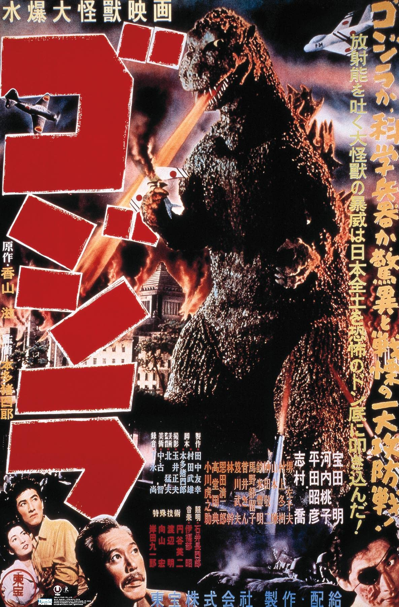
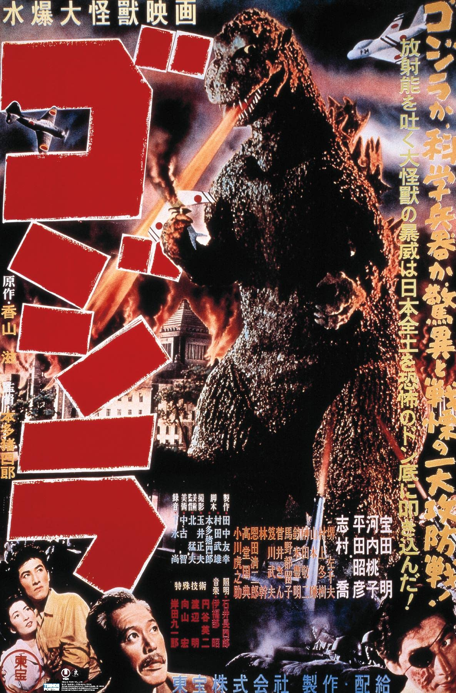

El barco de pesca japonés Eiko-Maru es atacado por un relámpago que surge del agua cerca de la Isla de Odo y se hunde. El bote de rescate, Bingo-Maru, es enviado para investigar el accidente pero sufre el mismo destino. Se envía un tercer barco para investigar el suceso, encuentra algunos supervivientes, y al igual que los otros dos barcos, se hunde. Mientras tanto, en la Isla de Odo, los pescadores no logran capturar peces: «Entonces… debe de haber sido Godzilla», dice un anciano. Godzilla es considerado un dios monstruo que vive en las profundidades abisales y asciende para alimentarse de humanos. Durante la antigüedad, cuando la pesca era pobre, los nativos sacrificaban muchachas para evitar que Godzilla atacara la aldea. Un helicóptero que lleva a reporteros investigadores llega en la Isla de Odo. Todos los nativos creen que los desastres recientes fueron causados por un monstruo, pero los reporteros siguen siendo escépticos. Esa noche los nativos realizan un exorcismo en esperanzas que Godzilla no ataque otra vez. Mientras que los nativos están durmiendo, una tormenta llega y un monstruo oscuro ataca a la pequeña aldea, causando muerte y destrucción.
El día siguiente, los testigos van al Edificio de la Dieta en Tokio. El paleontólogo Dr. Kyohei Yamane solicita que un grupo investigador sea enviado a la Isla de Odo. La nave es enviada y llega con seguridad en la isla. Yamane encuentra huellas gigantes contaminadas con radiactividad junto con un trilobites. Repentinamente, se escucha una alarma desde la aldea y los aldeanos son enviados a las colinas para luchar con el monstruo. Repentinamente, la cabeza rugiente de una criatura enorme, espantosa, parecida a un dinosaurio, se ve sobre la colina. Los aldeanos huyen por sus vidas. El monstruo entonces vuelve nuevamente dentro del océano. (Una escena original de esto era que aparecieron los aldeanos que huyeron para las colinas adonde Godzilla levantó una vaca muerta en su mano. No hay copias sabidas que sobrevivieron de esta escena y solamente algunos cuadros prueban su existencia). Yamane estudia la evidencia y descubre que las explosiones atómicas recientes despertaron al monstruo, que sobrevivió de alguna manera a los tiempos prehistóricos. El sedimento del monstruo, a que Yamane nombró “Godzilla" por la leyenda de Isla de Odo, contenía una cantidad masiva de estroncio-90, que podía solamente haber venido de una bomba atómica. Después de la presentación de Yamane, un hombre de la muchedumbre sugiere que la información sea hecha pública. Puesto que Godzilla es el producto de armas atómicas, la verdad podría causar algunas malas consecuencias, puesto que estos asuntos siguen siendo delicados en el mundo.
Sin embargo, una mujer se opone a la sugerencia de Sr. Ooyama porque la verdad debe ser dicha. Después de que ella llame a Ooyama un idiota, el caos cunde en el Edificio de la Dieta. Sin embargo, los orígenes de Godzilla son revelados al público. Una flota anti-godzilla se envía y utiliza inmediatamente unas bombas de profundidad contra Godzilla. En su hogar, Yamane se sienta solo en el cuarto con la luz apagada. Yamane es zoólogo y no quiere que Godzilla sea matado, sino estudiado. Esa noche, Godzilla aparece repentinamente en la bahía de Tokio delante de una nave del. En menos de un minuto, el monstruo desciende nuevamente al océano pero todavía causa pánico a nivel nacional. La mañana próxima, los funcionarios le preguntan a Yamane si hay una manera de matar al monstruo. Yamane, frustrado, explica que no hay, puesto que Godzilla ha sobrevivido ya a una enorme dosis de radiación. Yamane cree que se debe estudiar el monstruo para ver qué lo mantiene vivo. El Dr. Daisuke Serizawa, un colega de Yamane, contrata a la hija de Yamane, Emiko. Emiko, sin embargo, está enamorada del teniente Hideto Ogata del Nankai Steamship Company. Cuando Emiko visita Serizawa para decirle que ella ama a Ogata, Serizawa revela su propio secreto oscuro. Impactada por la revelación, Emiko deja a Serizawa, prometiendo no decirle a nadie lo que ella escuchó. A la noche, Godzilla aparece otra vez en la Bahía de Tokio y ataca la ciudad. Mientras que el ataque del monstruo fue relativamente corto, causó mucha destrucción y muerte.
La mañana próxima, los militares construyen una alta línea de cerca de alambre de púas de 30 metros de altura a lo largo de la costa de Tokio que le dará un shock de 50.000 voltios de electricidad a Godzilla cuando llegue otra vez. Evacúan la ciudad y ponen a los civiles en refugios antibomba. Los militares entonces preparan un bloqueo a lo largo de la línea de la cerca. Cuando cae la noche, Godzilla emerge en la Bahía de Tokio otra vez. El monstruo pasa fácilmente a través de la cerca eléctrica gigante, sin recibir lesión alguna. Mientras que Godzilla se abre paso a través de los alambres de alta tensión, arroga un rayo atómico que enciende cualquier cosa en su trayectoria. Los tanques y los militares están desesperados contra Godzilla. Para el final de la noche, la ciudad entera está en un mar del fuego, matanza y los millares de civiles inocentes heridos en la trayectoria del monstruo. Mientras que Godzilla vadea en el mar, una escuadrilla de los Misiles de Fuego lanzados por jets golpean al monstruo, pero éste resulta ileso mientras que desciende de nuevo desde la Bahía de Tokio. Por la mañana próxima, la ciudad está en ruinas absolutas. Los hospitales están llenos con las víctimas, muchas expuestas a grandes dosis de radiación. Cuando Emiko ve a las muchas víctimas del ataque de Godzilla, ella toma a Ogata a un lado y le dice el secreto oscuro de Serizawa, en esperanza de que pueda hacer algo contra Godzilla.
Serizawa le había revelado a Emiko un superarma destructiva llamada "Oxygen Destroyer", un arma que disuelve todo el oxígeno en el agua y desintegra cualquier forma de vida que rodea su trayectoria. El arma es aún más destructiva que una bomba atómica. Al conducir su investigación sobre el oxígeno, Serizawa descubrió la energía destructiva del Oxygen Destroyer. Shokeado por el descubrimiento, Serizawa se había hecho la promesa de nunca revelar su investigación en su forma actual, de modo que pueda encontrar algo que pueda beneficiar a sociedad y no destruirla.
Ogata y Emiko visitan a Serizawa para preguntar que arma utilizarían contra Godzilla. Serizawa rehúsa y es atormentado por destruir su creación. Ogata y Serizawa luchan brevemente hasta que Ogata recibe una herida a su cabeza. Cuando Emiko trata la herida, Serizawa se disculpa. "Si el Oxygen Destroyer se utiliza incluso una vez, los políticos de alrededor del mundo lo verán. Por supuesto lo utilizarán como arma", dice Serizawa. “Bombas contra bombas, misiles contra los misiles, y ahora una nueva superarma será lanzada sobre todos nosotros. Como científico -no, como ser humano- no puedo permitir que eso suceda”. Ogata intenta convencer Serizawa de que él es el único que puede salvar al mundo. Los “seres humanos son animales débiles”, discute Serizawa. “Aunque quemo mis notas, el secreto todavía está en mi cabeza. Hasta que muera, ¿quién puede ser capaz de forzarme a crear el dispositivo otra vez?”. Serizawa teme que el dispositivo caiga en manos equivocadas. Ogata dice finalmente "Tú tienes tus miedos, que serán una realidad, y tú tienes a Godzilla, que es una realidad". Un serio programa de televisión aparece en el aire, demostrando la devastación causada por Godzilla, junto con los rezos para la esperanza y la paz. Rasgado por lo que él está atestiguando, Serizawa decide en última instancia utilizar su Oxygen Destroyer, pero solamente una vez. Serizawa entonces quema su investigación, sabiendo que esto será para el beneficio de la sociedad.
El día siguiente, una nave de la marina de guerra se lleva a Ogata y Serizawa para utilizar el dispositivo en la Bahía de Tokio. Serizawa solicita que lo lleven para cerciorarse de que el dispositivo será utilizado correctamente. Ogata rechaza al principio pero pronto acepta. Ogata y Serizawa entonces descienden en el agua y pronto encuentran a Godzilla despierto pero reclinándose. Aparentemente inconsciente de los zambullidores, el monstruo camina lentamente alrededor del suelo marino. Serizawa señala Ogata para emerger cuando él planta el Oxygen Destroyer. Cuando Serizawa ve morir a Godzilla por el arma destructiva, corta su cuerda y muere con Godzilla, sacrificándose de modo que su conocimiento del arma horrible no sea revelado al mundo. Un Godzilla agonizante emerge, da un rugido final, y cae al fondo, muriendo en el océano. Aunque Godzilla es muerto, el sonido sigue siendo escuchado. “No puedo creer que Godzilla era el único miembro que sobrevivía de su especie,” dice el Dr. Yamane. “Si seguimos con pruebas nucleares, es posible que otro Godzilla pueda aparecer en alguna parte en el mundo, otra vez.” Pues la gente a bordo de la nave mira al sol, es incierto si la muerte de Godzilla es el final o el principio de una era apocalíptica.
| Habilidad | Descripcion |
|---|---|
| Aliento atomico | Por lo general, se ha demostrado que el aliento atómico de Godzilla incendia manzanas enteras y destruye fácilmente la mayoría de las armas militares. Dentro de los acontecimientos de la película de 1954, su aliento atómico se presentó como una explosión blanca y nebulosa. |
| Resistencia | Comenzando en la primera película de Godzilla, Godzilla mostró una inmunidad al armamento convencional, prácticamente impermeable a todo lo que el JSDF le arrojó. El Dr. Yamane afirma que el hecho mismo de que Godzilla sobrevivió a la exposición a una explosión de una bomba de hidrógeno es un testimonio de su durabilidad. |
| Caractersiticas anfibias | Aunque técnicamente es un reptil y no un anfibio, Godzilla tiene un estilo de vida anfibio. Pasa la mitad de su vida en el agua y la otra en tierra. Es un luchador tan experto bajo el agua como lo es en tierra. |